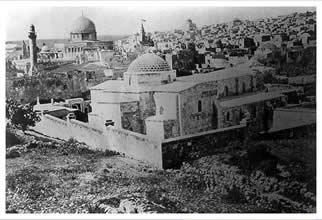

Au nom d’Allah le Clément, le Miséricordieux, Louanges à Allah.
Qui a construit l'Aqsa?

Première - Deuxième - Troisième - Quatrième partie
Qadi Cheik Jabal Libnan Mustapha Chahde
Radio du saint coran
Souleyman  a construit al Aqsa, elle avait été construite avec les plus belles pierres de marbre blanc comme le lait, de l'or, de l'argent et le meilleur bois. David, son père voulait la construire, mais Dieu a voulu que cela soit fait par son fils Souleyman. Alors que Bani israil avait désobéit à Dieu, Dieu leur proposa trois épreuves pour se faire pardonner: La faim, la guerre ou la peste pendant trois jours et David leur choisit la peste. David
a construit al Aqsa, elle avait été construite avec les plus belles pierres de marbre blanc comme le lait, de l'or, de l'argent et le meilleur bois. David, son père voulait la construire, mais Dieu a voulu que cela soit fait par son fils Souleyman. Alors que Bani israil avait désobéit à Dieu, Dieu leur proposa trois épreuves pour se faire pardonner: La faim, la guerre ou la peste pendant trois jours et David leur choisit la peste. David savait que la terre où se trouve aujourd'hui la mosquée d'al Aqsa était bénie et il a emmené Bani israil là bas dans l'espoir d'une miséricorde. Et là-bas, ils ont prié Dieu et David
savait que la terre où se trouve aujourd'hui la mosquée d'al Aqsa était bénie et il a emmené Bani israil là bas dans l'espoir d'une miséricorde. Et là-bas, ils ont prié Dieu et David a invoqué son Seigneur. Le châtiment par la peste devait durer trois jours, mais Dieu le réduit, du fait de leurprosternation et de l'invocation du prophète David,
a invoqué son Seigneur. Le châtiment par la peste devait durer trois jours, mais Dieu le réduit, du fait de leurprosternation et de l'invocation du prophète David, de la prière de l'aube àcelle du couché. Des centaines de milliers de Bani israil mourrurent. Pour remercier Dieu d'avoir réduit la punition; David voulu construire une maison sur cette terre bénie,- c'est ainsi qu'on appelle la mosquée auparavant: Bayt Allah, la maison de Dieu. Mais Dieu voulu que ce soit Souleyman et non pas David qui l'a construisit, car il voulait que celui qui l'a construise n'est jamais tué ni fait la guerre. Ce qui n'est pas un constat négatif vis à vis de David puisque David avait obéit à Dieu en faisant la guerre. David fut tristre de ne pas pouvoir la construire. Mais Dieu le consola en lui disant que celui qui construirait la mosquée serait de sa descendance: son fils. C'est pourquoi se fut donc le fils de David, Soulayman,
de la prière de l'aube àcelle du couché. Des centaines de milliers de Bani israil mourrurent. Pour remercier Dieu d'avoir réduit la punition; David voulu construire une maison sur cette terre bénie,- c'est ainsi qu'on appelle la mosquée auparavant: Bayt Allah, la maison de Dieu. Mais Dieu voulu que ce soit Souleyman et non pas David qui l'a construisit, car il voulait que celui qui l'a construise n'est jamais tué ni fait la guerre. Ce qui n'est pas un constat négatif vis à vis de David puisque David avait obéit à Dieu en faisant la guerre. David fut tristre de ne pas pouvoir la construire. Mais Dieu le consola en lui disant que celui qui construirait la mosquée serait de sa descendance: son fils. C'est pourquoi se fut donc le fils de David, Soulayman, qui le fit d'où son nom : "oussalimouhou min al dima"
qui le fit d'où son nom : "oussalimouhou min al dima"
Le prophète  a dit dans un Hadith qu'entre la construction de la Mecque et de l'Aqsa il y a 40, mais on ne sait pas de quoi il s'agit des jours, des mois... Ses fondations dateraient cependant d'avant le déluge de Noé. C'est à dire de la même manière qu'Ismaël a construit la maison sur ses fondations. C'est la même chose pour Souleyman.
a dit dans un Hadith qu'entre la construction de la Mecque et de l'Aqsa il y a 40, mais on ne sait pas de quoi il s'agit des jours, des mois... Ses fondations dateraient cependant d'avant le déluge de Noé. C'est à dire de la même manière qu'Ismaël a construit la maison sur ses fondations. C'est la même chose pour Souleyman.
Des ulémas ont dit que Masjid al Aqsa a été construit 40 ans après Masjid al Haram cela est prouvé dans le Hadith Sahih rapporté de Al-Bukhâri et de Muslim :
Abou Dhar a dit: "Comme je demandais à l'Envoyé d'Allâh quelle était la première mosquée bâtie sur terre, il me répondit : "La Mosquée sacrée". "Et ensuite ?", continuai-je. "Ensuite, ce fut la mosquée Al-Aqsa". "Et quel était l'intervalle du temps entre leurs constructions ?", repris-je. "Quarante ans", répliqua-t-il". (Mouslim)
Voir Ibn Kathir fil bidaya wa nihaya chap. 12 page 325
Mais Dieu est le plus savant.
Al Aqsa Archeological and historical tour
Que la paix et les bénédictions d'Allah soient sur le prophète Mohammad, celui qui a tenu sa promesse, le confident. Ô Allah nous ne savons que ce que Tu nous as appris, c’est Toi qui détiens la science. Ô Allah apprend nous ce qui nous apportera du bien et fais nous profiter du bien de ce que Tu nous as appris et augmente nos connaissances. Et embelli le bien à nos yeux et aide nous à le suivre. Et enlaidi le mal à nos yeux et aide nous à nous en détourner. Et mets nous parmi ceux qui écoutent la parole et suivent les meilleures d’entre elles. Et fais de nous tes bons adorateurs par Ta miséricorde.
Gloire à Toi Seigneur, que Tes louanges soient célébrées, j'atteste qu'il n'y a de divinité que Toi, j'implore Ton pardon et je reviens vers Toi repentante.